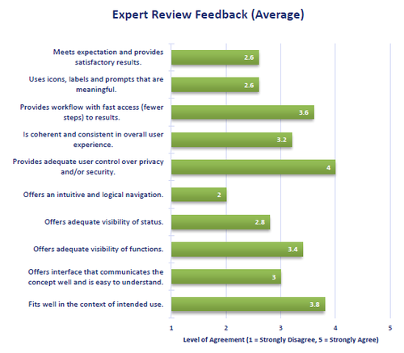
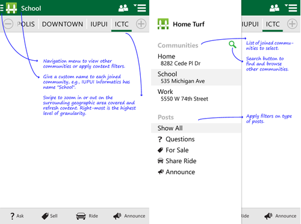

Home Turf is a mobile app concept built around the idea of “community notice boards” that allow people to connect with each other within a confined local community. Users in the Home Turf system will be able to request for shared rides, share buy / sell / giveaway notices, ask for help or information with other community members or neighbors in any of the following premises: college dorm, workplace, apartment complex. Like in real world, users can choose to remain largely anonymous and participate in instant communication with neighbors until there is a mutual exchange of personal details.
In the old days people used community boards – large pin-up boards placed in the lobby, stairwell or any common place of the community. The boards would hold for sale ads, notice of lost cat, request for assistance or just general messages to share with fellow community members. The drawbacks of such notice boards are that they would require someone to be physically present in front of it to see the message, and the messages may not be applicable to all who read them. HomeTurf is different from these existing solutions (Foursquare, Ridejoy, Nextdoor, i-Neightbours, ChaCha etc.) in the sense that it bundles a variety of user needs into one neat package and offers social collaboration through anonymity and/or user controlled information sharing. HomeTurf facilitates communication within a specific hyper local community area as narrow as one’s apartment and even at a broader level as wide as a whole city. The ability to reach a target user group within a highly confined or broad geographic area through a dynamic and unique user interface, sets HomeTurf apart from the competition.
A first version of the user interface was generated and tested using printed wireframes on paper cutouts.
This interactive Hi-Fi prototype was developed as a mockup Android application and deployed on a Nexus 4 for evaluation and testing. The app was developed using the Android SDK. Here are some screenshots of the prototype:
As a part of the expert evaluation, evaluators were given a set of task-based scenarios and log errors found. 10 questions related to user experience were presented to each evaluator as a questionnaire to collect level of agreement. Averaged results are given below:

Based on the feedback and recommendations received from the task-error sheet, questionnaire and post-test open-ended interviews, we came up with the following changes that might improve the design.
